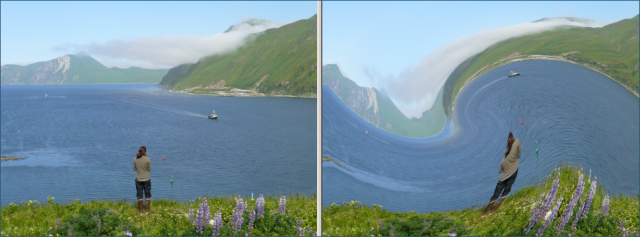

The Swirl effect stretches a photo about a point in a circular direction at a specified angle. You
can click on the left (original) copy of the photo to set the center point of the swirl. You can use
the right (modified) copy for paning and zooming.
